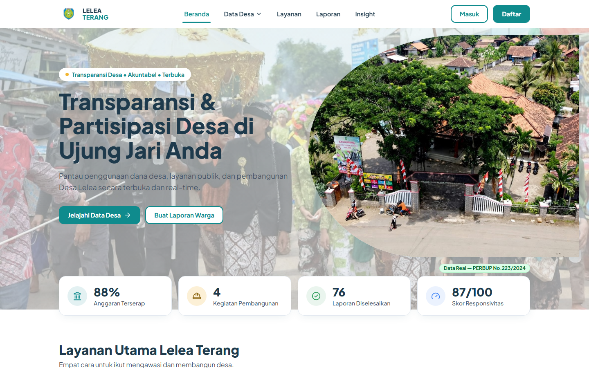
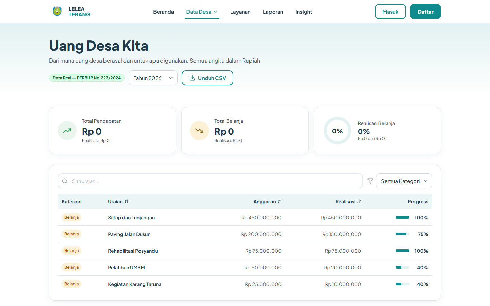
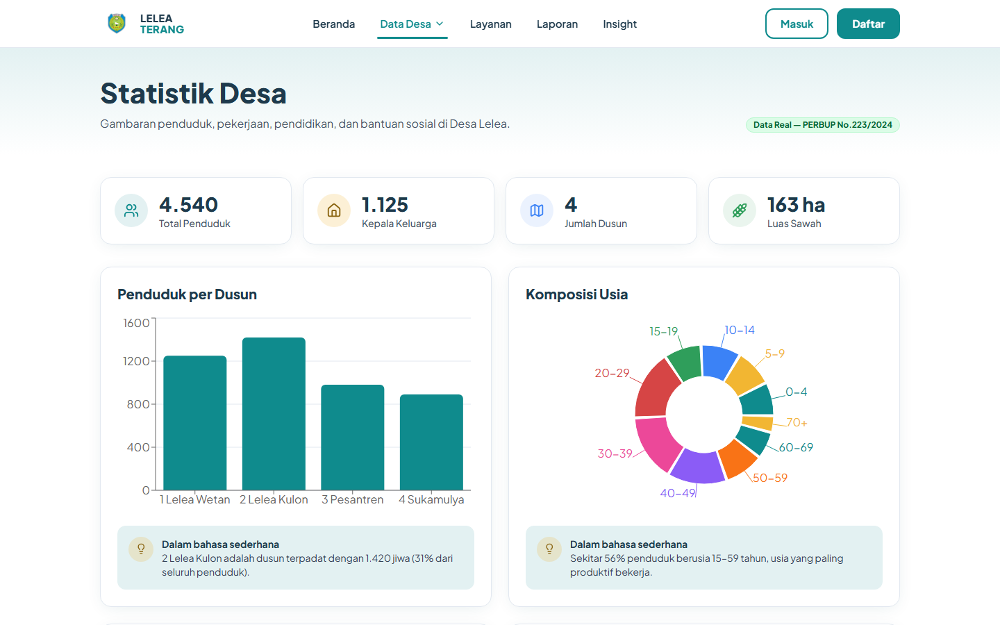

Latar Belakang: Kebutuhan transparansi anggaran dan partisipasi warga di Desa Lelea.
Tujuan: Meningkatkan kepercayaan publik dan efektivitas pembangunan desa.
Masalah: Sulitnya akses data anggaran dan minimnya kanal laporan warga yang terintegrasi.
Platform Transparansi & Partisipasi Warga Desa Lelea
Nama Tim: NamaTim
Latar Belakang: Kebutuhan transparansi anggaran dan partisipasi warga di Desa Lelea.
Tujuan: Meningkatkan kepercayaan publik dan efektivitas pembangunan desa.
Masalah: Sulitnya akses data anggaran dan minimnya kanal laporan warga yang terintegrasi.
/ (Home)
├── anggaran
├── pembangunan
│ └── :id
├── statistik
├── lapor
├── laporan
│ └── :ticket
├── lacak
├── layanan
├── insight
└── admin (dashboard)
├── laporan
├── layanan
├── kegiatan
├── anggaran
└── statistik


